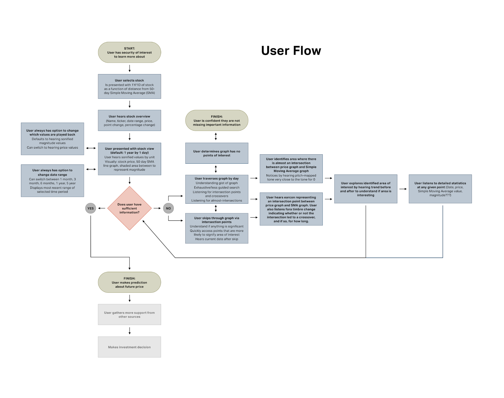
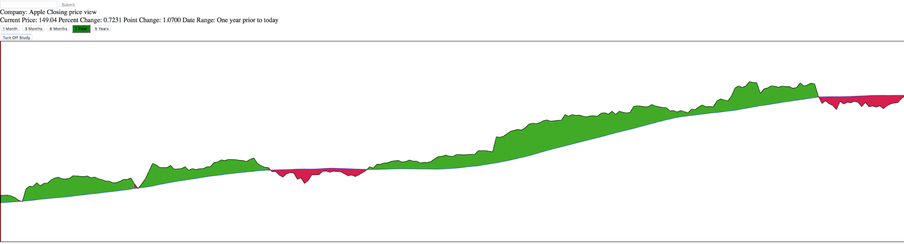
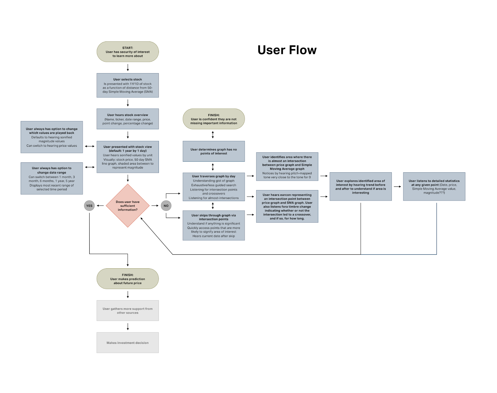
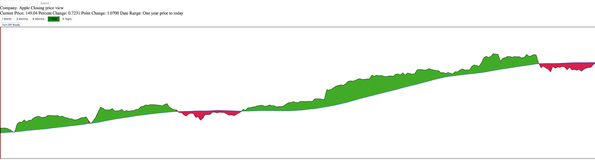

Ideation
With our research in hand, we set out to explore which solutions could address the pain points of people with visual impairments, and enable them to explore data in ways observed of sighted finance experts.
Walking the Wall
For our first foray into the design process, we “walked the wall.” In walking the wall, the entire group, first silently, then with conversation, went through the affinity diagram in depth and write design ideas, questions, and breakdowns we notice from the organized clusters.

Impact/Feasibility Matrix
In narrowing down from our large list of design directions to a more manageable set we planned to prototype, we plotted the most promising ideas on a two-by-two matrix, using our best judgment as to the feasibility of building the idea, as well as the impact it could have on the workflows of people with visual impairments.
Prototyping
Once we narrowed down ideas, we began the iterative process of building and testing our concepts with both people with visual impairments and sighted finance professionals.
Low Fidelity Prototyping
We settled on twelve concepts from our idea matrix, and created low fidelity prototypes to bring them to life. These prototypes all focused on at least one of our four guiding principles: provide context for visualizations, provide control in data navigation, provide communication and persuasion of data, provide confidence in data accuracy. We also experimented with different input and output modalities, including voice, sonification, haptics, and tactile approaches. We user-tested all twelve of these prototypes with sighted Bloomberg employees. Most were run in a Wizard of Oz fashion, where members of our team would play the role of the computer in the testing session. Through this participation, we were able to work out basic usability issues, understand the capabilities users might instinctively ascribe to our systems, and therefore better grok the end standard our product might aim to reach.
A description of each prototype can be found in the grid below.
What we learned from the prototypes: Quotes: Data:
Medium Fidelity Prototyping
At this juncture, we had to narrow down from twelve ideas towards a more coherent system. We also returned to our impact/feasibility matrix, and reassessed how our evolved ideas would fare in terms of both their potential effect on accessibility, as well as our technical abilities to build a working, user-tested prototype under our time constraints. Going back to our research insights, there was also a strong emphasis on the “control in data navigation” insight. Simply put, we felt better navigation through data had a great level of potential for visual accessibility in general, and that it was also a good starting point from which we might introduce elements of our other prototypes. We also identified candlestick charts as a means of visualizing stock data that were totally inaccessible to people with visual impairments. These charts, which expand on a typical line chart to visualize the open, high, low, and close values for a unit of time, as well as identifying if the stock trended upwards or downwards that day. By chunking these five values into one image, sighted finance experts are able to take in a great deal of information at a quick glance.
Validating How Experts use Candlestick Charts
We next sat down with Application Specialists at Bloomberg to understand how they use candlestick charts, and get a good handle of what information is important to them. We noted that candlestick charts tended to be used in Technical Analysis. Another piece of the TA puzzle involved using technical indicators (typically moving averages) to help bring context to stock data. We realized that whatever system we built needed to offer quick access to these significant areas of interest. We compiled these observations into a primary user task, to help guide the prioritization of system capabilities at the medium fidelity stage.
Modes of Navigation
At the same time, we began prototyping different navigation systems to help people with visual impairments better access these candlestick charts. To accomplish this more powerful control in data navigation, we decided to prototype three different modes of traversal. We developed a system that used keyboard shortcuts to navigate a stock chart. A second system used a tablet and stylus to simulate the experience of scrubbing on a smartphone. Finally, our third system used a physical dial to speed up linear data traversal. While each of these systems used a different means of traversing through data, these systems all contained the same “skips” and access to details. In each prototype, users could hear detailed values of each candlestick. They could also skip to the significant points (i.e. where the graph crosses or stays above a technical indicator.)
We user-tested our prototypes with six people who are blind. Tasks involved a free exploration of a graph, locating and providing info about significant areas, and comparing detail values from two discrete dates. Our feedback midway through these tests strongly suggested that despite its utility on mobile interfaces, the scrubbing interface was not a winner amongst our users. After compiling the data from our user feedback, as well as their performance on tasks, we decided to scope to a keyboard-based system. Looking back on our insights, we believed that any new hardware we introduced would have to offer a significant benefit in order to potentially be adopted. Although the dial was very well received by users, it didn’t appear to provide enough of an improvement to justify the additional cost and workflow change.

High-Fidelity
We were confident in the power our keyboard-based system would offer to people with visual impairments, but we wanted to test our assumptions about the nature of the information to which we were aiming to provide access. One common piece of feedback we’d received during our user-testing sessions was that people wanted to know how far away these significant values lay from the technical indicators we offered (note: I think this is kind of a stretch - I suspect there’s a quote that illustrates this point more accurately; i.e. that even though people didn’t really understand the info they were listening to, they still knew enough to know that we weren’t offering the whole picture). Before starting on the final prototype of our system, we went back to Bloomberg Application Specialists to walk through our primary user task and make sure we were offering the right information.
We were not surprised to find out that the Application Specialists were most concerned with the distance between stock prices and technical indicators. In fact, absolute price hardly came up in these discussions, reinforcing this notion of relativity. After noticing a chart on the Terminal that mapped this very distance, we realized that providing this magnitude of distance via sound could be very powerful for users with visual impairments.
Our final prototype thus focused on providing control in navigation through keyboard shortcuts, as well as giving users quick access to distance from technical indicators. We chose to use a 50 day simple moving average, as it is one of the most standard technical indicators used in the domain. By hearing this one sonified value at a time, we believed users could quickly make relative judgments about changes in price.
 


